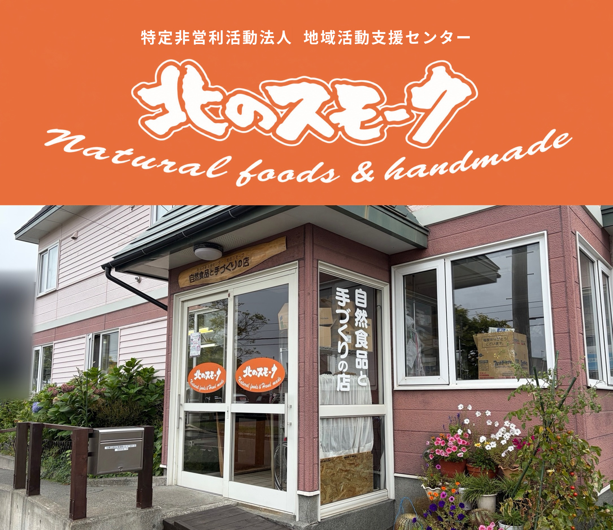
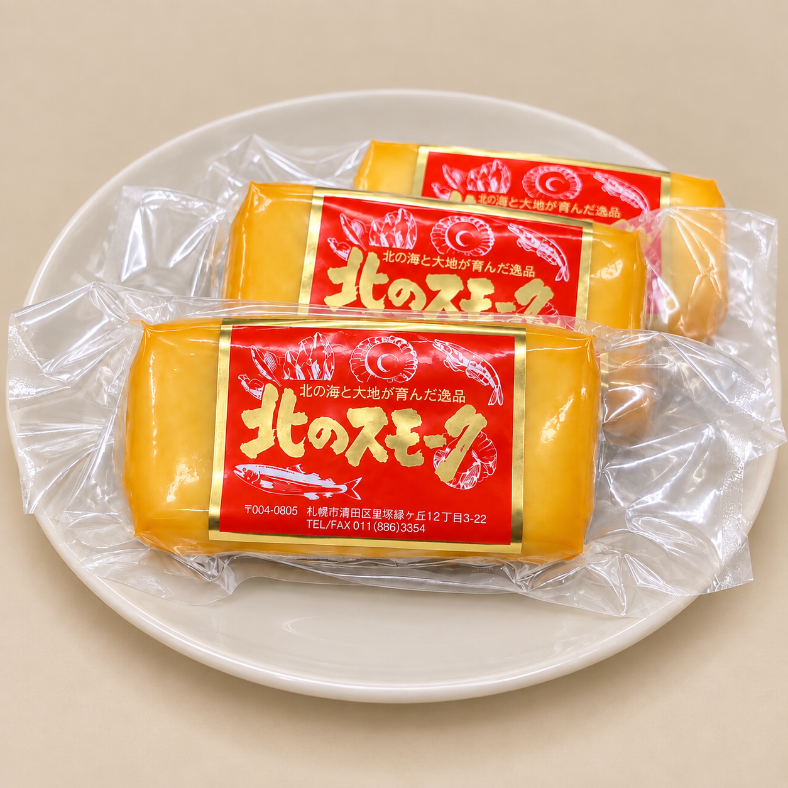
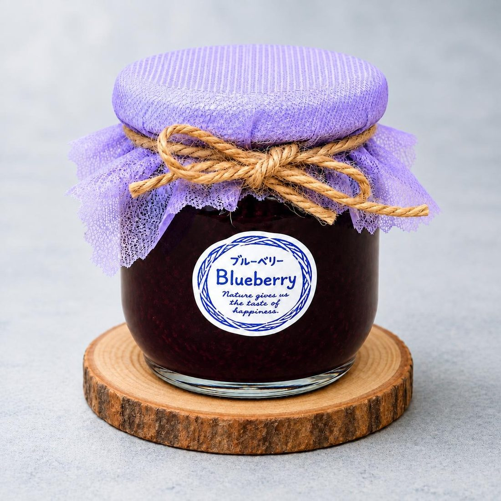
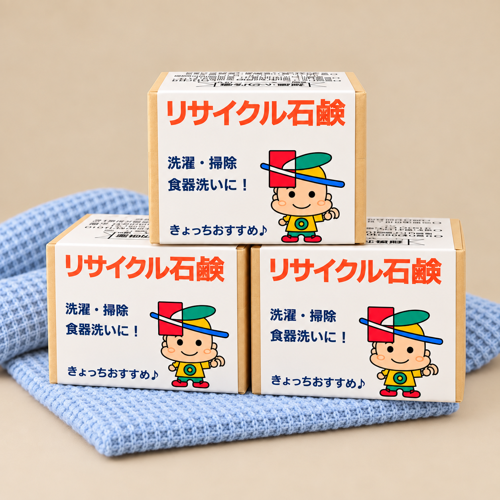
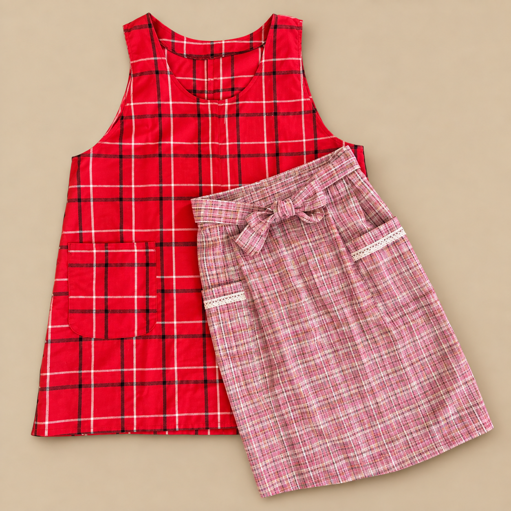
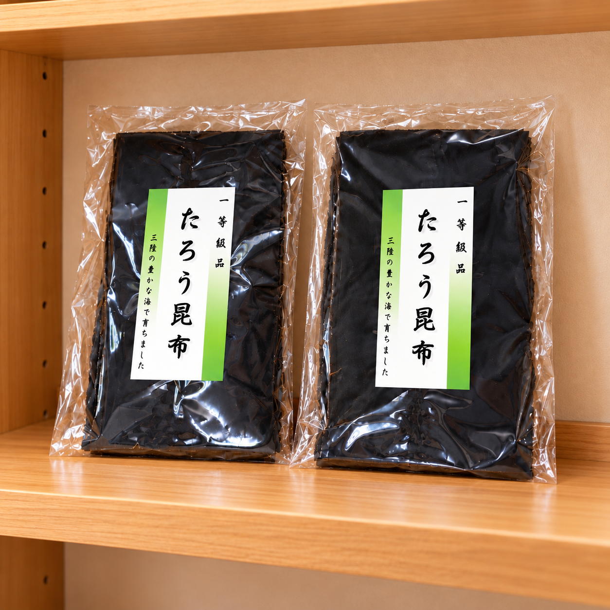
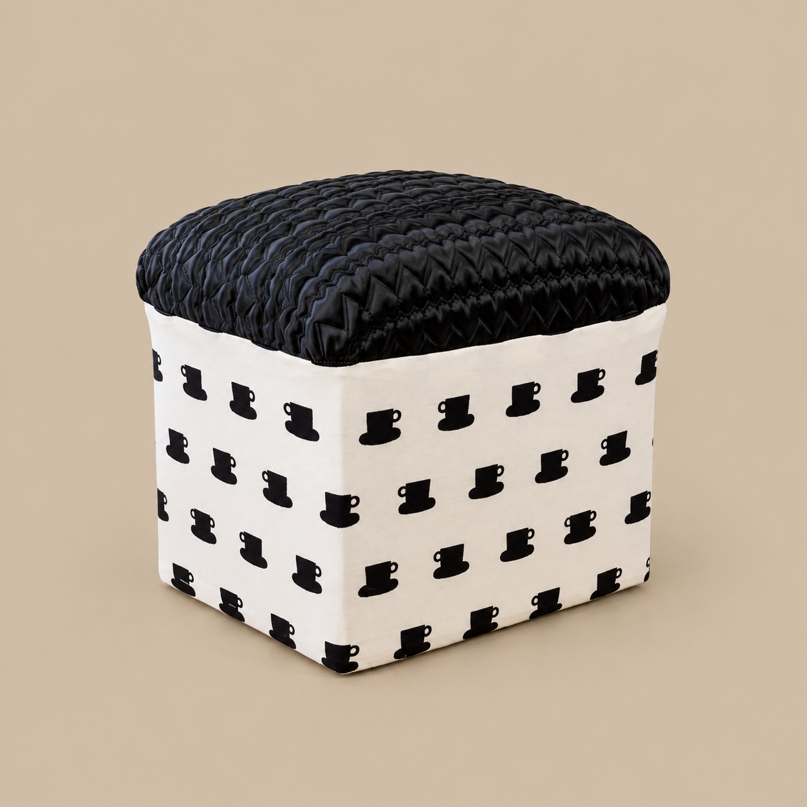
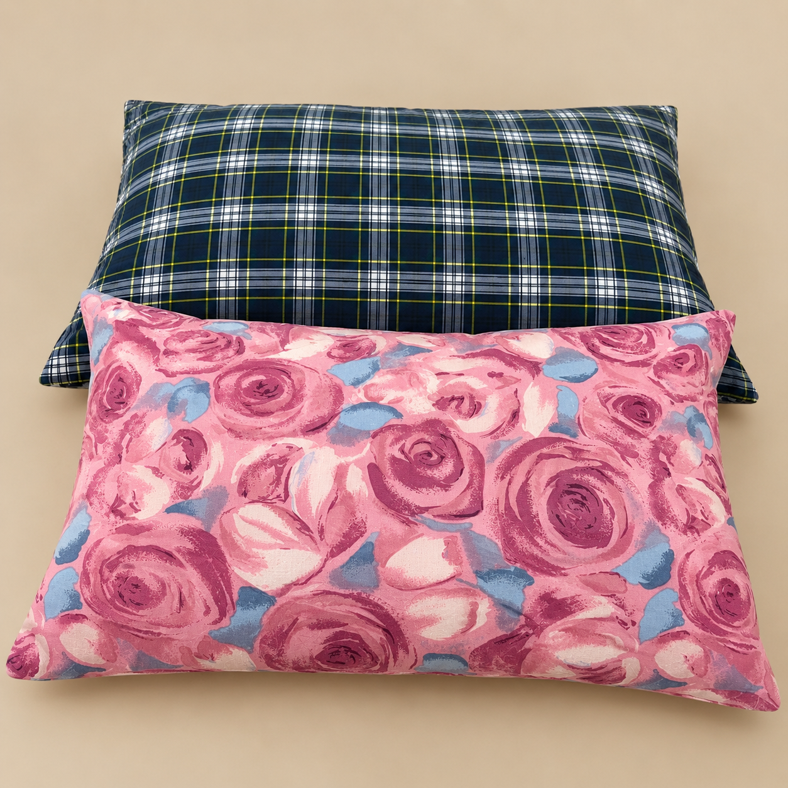
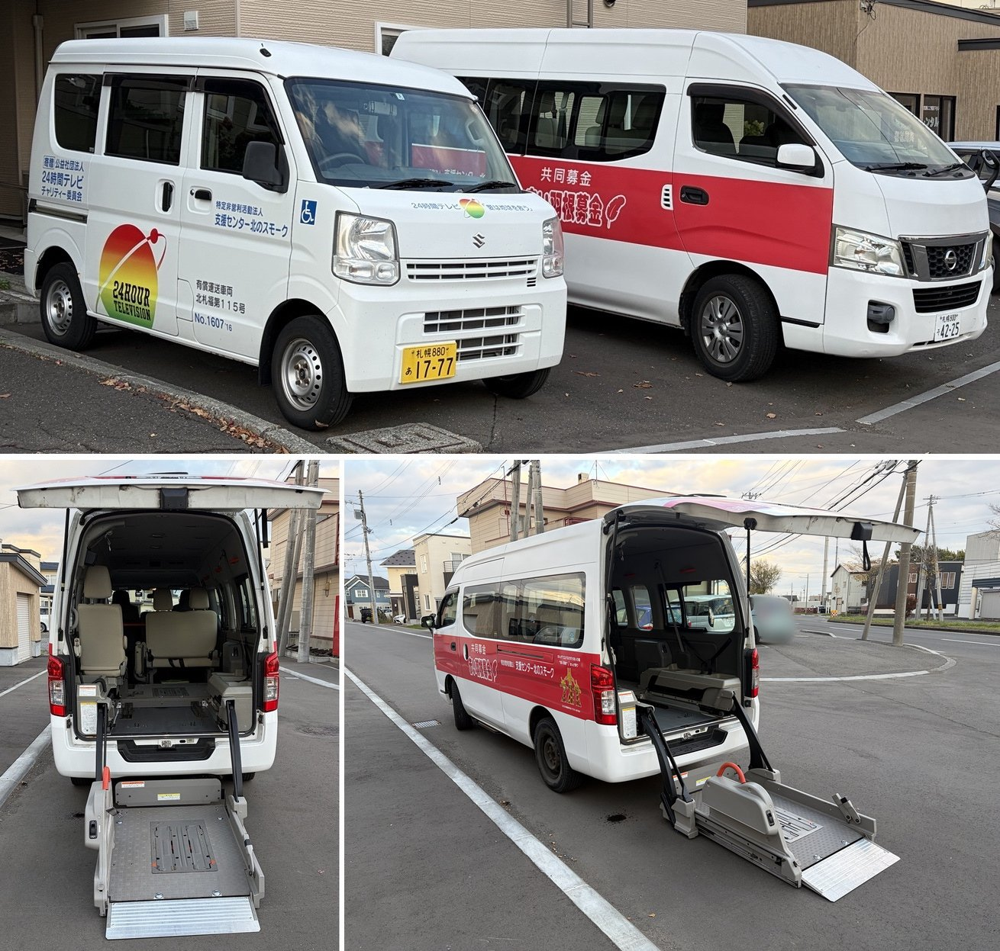

北のスモークは、障がいの種別や程度を問わず、多様なメンバーが集う 札幌市の「地域活動支援センター」です。
食品加工、受託作業、畑作業、手芸品製作、バザーへの出店など、幅広い活動を行っています。
一人ひとりが自分に合った作業に取り組み、 それぞれの力を発揮できるよう努めています。
また、作業だけではなく、清掃や昼食の調理、行事での外出、誕生日会やクリスマス会など、日々の生活も大切にしながら、楽しい時間を共に過ごしています。
画像をタップすると拡大と説明がご覧いただけます。

クルミのチップで燻製しています。
北のスモークでおこなっています。
リサイクル石鹸です。
動きやすく仕上げています。
三陸の豊かな海で育った昆布ならではの、
子供から大人までお使いいただけます。
※受注製造の商品もございます。お電話にてご確認ください。
北のスモーク主力商品の
チーズスモーク・ブルーベリージャム・
リサイクル石鹸は、
下記のリンク先からもご購入いただけます。
元気ショップ「いこ〜る」（JR札幌駅西コンコース1階）、
元気ショップ（地下鉄南北線大通駅コンコース内）の
お近くにお越しの際は、ぜひお立ち寄りいただけると幸いです。

送迎は、スロープ付きの軽バンと、
リフト付きの福祉車両でおこなっています。
どちらも車椅子のまま、安心してご乗車いただけます。
ぜひ、ご利用ください。
（別画面で開きます）
☘️
北のスモークでは、通所者さんと
ボランティアさんを募集しています。
☘️
小規模な活動センターで、親しみやすい環境です。
活動の様子を見てから、ご検討いただくこともできます。
興味のある方は、ぜひ一度お気軽に見学へお越しください。